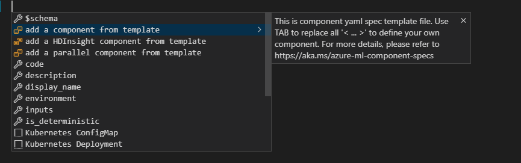
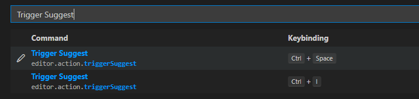

How to use component spec schema in vscode¶
Prerequisites¶
Download vscode.
Download vscode ‘YAML‘ extension
Associate component spec schema to your yaml files¶
Press
Ctrl+Shift+pin VS Code to toggleCommand Palette, and enter “Settings“ to find settings configurations. If you just want to use component spec schema in current opened folder, it recommended to choose “Preferences: Open Workspace Settings“. Reference here for more information about settings in VS Code.Find Yaml:Schemas in opened settings page, click Edit in settings.json.
In settings.json, add below section:
We provided a merged schema to validate different kind of components:
Here we configure to associate the component schema to all files that end with “.yaml“.
{ "yaml.schemas": { "https://componentsdk.blob.core.windows.net/jsonschema/ComponentSchema.json": ["**/*.yaml"] } }
You can also change this to build your own association pattern. For example, below pattern will associate all yaml files start with ‘aml‘. Find more examples here.
{ "yaml.schemas": { "https://componentsdk.blob.core.windows.net/jsonschema/ComponentSchema.json": ["aml*.yaml"] } }
The merged schema validates yaml specs by checking the
typefield in it. For example, if a schema hastype: ParallelComponentin it, it will be validated as a parallel component. Iftypenot specified in yaml spec, the yaml will be validated as a command component.Now you are all set. See below section to learn how to write component spec with the help of the schema.
Writing component spec¶
After the configuration, you can follow the steps below to write a yaml.
Press
Ctrl+Spaceor type “add“ for hint, a list of templates for different kind of component will be shown, select one to get started.
If
Ctrl+Spacenot working for you, this hotkey may have been occupied by other programs. You can reference this doc and assign a new hotkey for command Trigger Suggest.
Fill required fields in the template, use
tabto switch between “<>“ wrapped fields and replace them with your own definition.Here is a generated component template:
$schema: http://azureml/sdk-2-0/CommandComponent.json name: < Put your unique component Name here > version: 0.0.1 display_name: < Put your component Display name here.> type: CommandComponent tags: from_schema_snippet: true inputs: < Your 1st Input name >: type: path # reference https://aka.ms/azure-ml-component-specs#data-types for more details description: < Edit description for your input > < Your 2nd Input name >: type: path optional: true description: < Edit description for your input > outputs: < Your 1st Output name >: type: path description: < Edit description for your output > environment: conda: conda_dependencies: name: project_environment channels: - defaults dependencies: - python=3.7.6 - pip=20.0 - pip: - azureml-sdk - < Specify your extra dependencies > os: Linux command: < Your command file name > --< Your 1st Input name > {inputs.< Your 1st Input name >} [--< Your 2nd Input name > {inputs.< Your 2nd Input name >}] --< Your 1st Output name > {outputs.< Your 1st Output name >}
If you need more fields for your spec, use
ctrl+spaceto toggle hint about more supported fields.Hover the mouse on fields to check the definition of the field.
If your yaml violates the schema, warning will be shown.